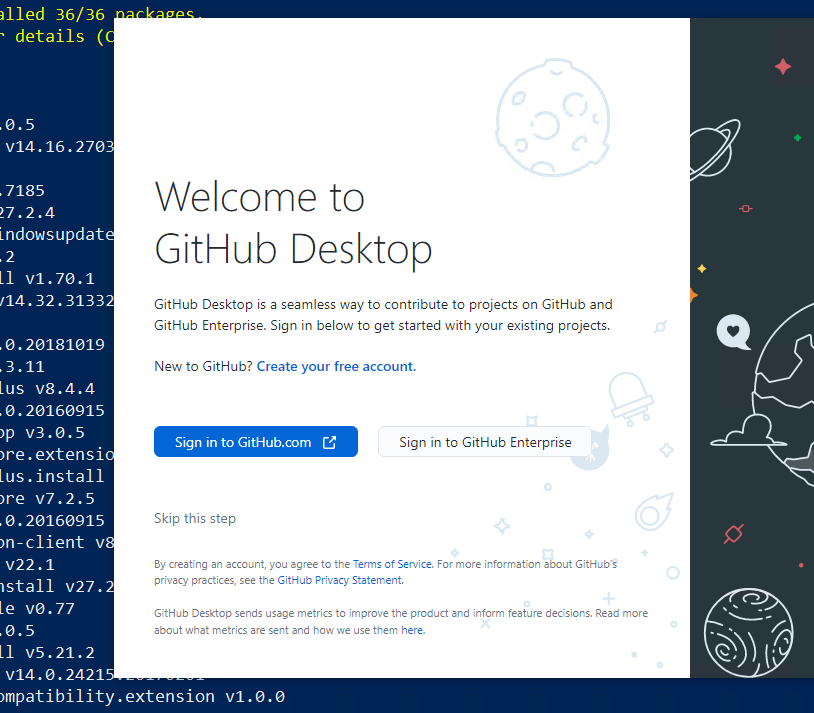

Installation of basic programs (HAMK BYOD) in students' personal devices (Windows).¶
The following guidelines utilizes the chocolatey package manager for Windows to install several applications that are used in different modules in HAMK.
The provided instructions use the Chocolatey package manager on Windows to install various applications needed for different modules at HAMK. It's important to install these tools on the device you'll use for studying, as they'll be essential throughout your studies.
Note
Remember, if you switch to a new device, just follow these instructions to ensure you have the necessary tools:
Step 0¶
Make sure that your computer meets HAMK BYOD requirements. You can find the requirements from here
Main points are: - Windows 11 (23H2 or newer) - 16 GB of memory
Step 1: Install CHOCOLATEY¶
Chocolatey is a popular package manager for Windows that simplifies the process of installing, updating, and managing software applications. It allows users to automate the installation of a wide range of software with a single command, making it efficient and convenient. Chocolatey provides access to a vast repository of pre-packaged software packages, which can be easily installed, updated, or removed using command-line instructions. This tool streamlines software management on Windows systems, enhancing productivity and reducing the manual effort required for software maintenance.
Requirements
- Windows 7 or newer version of Windows Operating System (Recommended Windows 10 or 11)
- PowerShell v2+
- .NET Framework 4+
Installation Process
- Start Powershell with Administrator rights (Run as Administrator) If you already have choco installed in your device, run the following command in your powershell
This will remove chocolatey from your computer! For re-installing only!
Lets understand what you did with above command:
rm: It deletes files or directories in this case it deletes the chocolatey directory.-erroraction 'silentlycontinue': This part of the command tells PowerShell to continue executing the script without displaying an error message if the removal encounters an error (e.g., if the directory doesn't exist).
Run the following command in Powershell to install CHOCOLATEY
Set-ExecutionPolicy Bypass -Scope Process -Force; iwr https://community.chocolatey.org/install.ps1 -UseBasicParsing | iex
Step 2: Programs/Apps Installation¶
After successfully installing the Chocolatey package manager, you can use it to install multiple apps simultaneously. This saves you significant time compared to installing each app individually.
The list of apps that you are going to install is as below:
powershell-core, git, vscode, putty, firefox, greenshot,google-drive-file-stream, googlechrome, safeexambrowser, notepadplusplus, winscp, 7zip, paint.net, windirstat, zoom, sudo, vmrc, vmware-horizon-client, docker-desktop & obs-studio powertoys
To install the above mentioned programs run the following script
choco install powershell-core git vscode putty greenshot notepadplusplus winscp 7zip paint.net windirstat zoom sudo vmrc vmware-horizon-client obs-studio docker-desktop google-drive-file-stream googlechrome safeexambrowser firefox curl powertoys vmwareworkstation -y
Step 3: Installing some useful VScode addons¶
- Restart your Powershell session
- Run the following commands
Step 4: Create GitHub Account¶
As you progress through your upcoming courses and projects, you'll begin using version control. GitHub, a platform for version control is mainly used at HAMK. You'll start by setting up your own GitHub account. If you already have one, you don't need to make a new account. While you'll study further into version control concepts in the future, your initial step involves creating an account and getting Git up and running on your personal device.
Create GitHub Account
If you already have a GitHub account, you can sign in and if you don't have one, you can create a new GitHub account by following the instructions below:
- Go to GitHub Sign up Page
- Fill in the Sign Up form.
- Verify your Email address. GitHub will send a verification email to the email address you provided. Go to your email inbox, find the email from GitHub, and click the verification link.
Congratulations! Once your email is verified, your account is ready. You can now start using GitHub to create repositories, contribute to projects and collaborate with others.
Link your HAMK email¶
Linking your school email to your GitHub account can offer several benefits, especially if you plan to use GitHub for both personal and academic purposes. When you link your your school email with your GitHub account: - It helps to verify your identity which is important when collaborating on academic projects during the module. - You might have access to educational resources for students or discounts.
Mandatory for all
Warning
It is mandatory for all students to get the GitHub Student Developer Pack, which is used in education.
Please follow the instructions below:
- Login to GitHub using your personal account.
- Once logged in, go to your GitHub account settings.
- In the left sidebar of the Settings page, click on "Emails."
- In the "Primary email address" section, you should see your personal email address associated with your account. Below that, you can click on the "Add email address" button to add your school email address.
- GitHub will send a verification email to your school email address. Check your school inbox, open the email, and click on the verification link provided.
Now, you'll have both your personal email and school email associated with your GitHub account. You can choose which email to use when making commits or changes.
Step 5: Activate GitHub Student Developer Pack¶
The GitHub Student Pack is a service meant to help students with their coding and development projects. It offers a variety of significant advantages including free access to premium developer tools, learning materials such as online courses and tutorials, cloud credits for experimentation, and opportunities to obtain hands-on experience with industry-standard technologies. Students can also get domain names for their projects, join a friendly community, and participate in hackathons and coding contests.
To activate the GitHub Student Developer Pack, follow these steps:
- Access the Student Developer Pack: Once Signed in to GitHub and linking up your school's email account, access the Sign Up for Student Development Pack page.
- Select your academic status as Student.
- Fill in the form and Click Continue.
Note: Verification may be required based on the situation. In such cases, you can utilize your mobile student card to complete the verification process.
Step 6: Configure Git¶
You have installed Git in Step 2. You need to configure Git by providing your full name and email address.You can start GitHub Desktop and configure using the graphical user interface as shown in the diagram below or use the command line.


Configure Git with command line
- Open Git Bash.
- Set your username and email, which will be associated with your commits. Use these commands, replacing "Your Name" and "your.email@example.com" with your actual information:
You're now set up to use Git on Windows. You can create repositories, make commits, and interact with remote repositories using Git commands.
Congratulations on successfully installing the essential applications necessary for your studies at HAMK. As you progress, there might be a need to install additional applications.